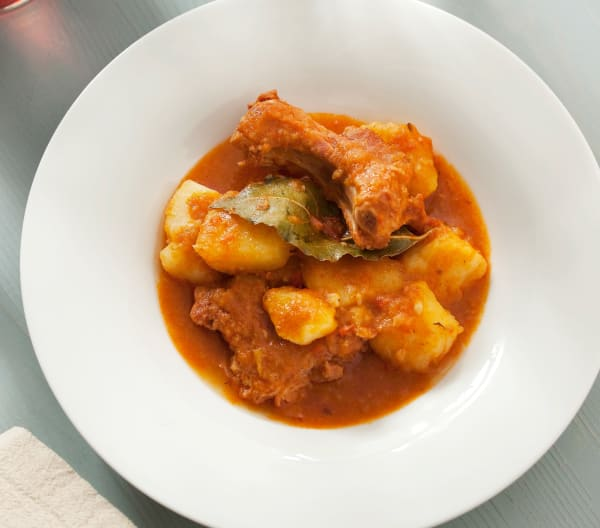
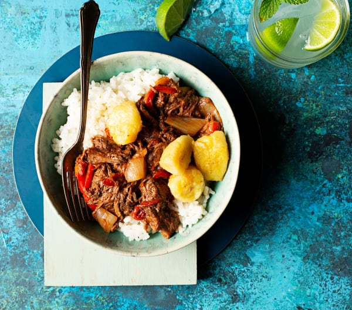
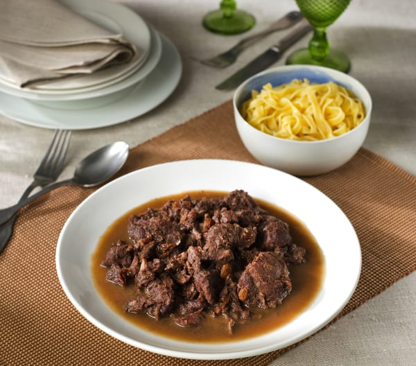

Recetas con carne
Disfruta de alguna de las mejores recetas que se pueden hacer con carne:
Dificultad: fácil
Tiempo de preparación: 15min
Tiempo total: 1h
Raciones: 6 raciones
Patatas guisadas con costillas de cerdo adobadas
Ingredientes
- 2 dientes de ajo
- 150 g de cebolla
- 100 g de pimiento verde
- 100 g de pimiento rojo
- 70 g de aceite de oliva virgen extra
- 900 g de costillas de cerdo adobadas en trozos de 5 cm
- 1 cucharadita de pimentón dulce
- 1000 g de patatas peladas y en trozos (3 x 3 cm)
- 1 hoja de laurel seca
- ½ - 1 cucharadita de sal
- 1 pellizco de nuez moscada molida
- 1 pellizco de comino molido
- 500 - 600 g de agua

Preparación
- Pique el ajo, la cebolla, el pimiento verde y el pimiento rojo. Sofría con un poco de aceite
unos 10 minutos.
- Añada a la sartén las costillas y doralas un poco (6-7 minutos).
- Vierta el sofrito y las costillas en una olla, incorpore el pimentón, 150 gramos de patatas, la
hoja de laurel, la sal, la nuez moscada, el comino y el agua. Guise durante 35 minutos.
- Cueza el resto de las patatas por separado.
- Ponga las patatas en una sopera y vierta encima el guiso. Mezcle bien y sirva.
Dificultad: fácil
Tiempo de preparación: 20min
Tiempo total: 4h 30min
Raciones: 4 raciones
Ropa vieja con arroz blanco
Ingredientes
- 800 g de aguja de ternera en trozos de 4-5 cm
- 2 - 3 dientes de ajo
- 1 pastilla de caldo de carne
- 200 g de vino tinto
- 50 g de vino de Jerez seco
- 100 g de agua para la carne
- ½ cucharadita de sal
- 20 g de aceite de oliva
- 150 g de cebolla
- 150 g de pimiento verde en tiras
- 150 g de pimiento rojo en tiras
- 100 - 150 g de tomate frito
- ½ cucharadita de comino molido
- 300 g de arroz de grano redondo
- 600 g de agua para el arroz

Preparación
- Ponga en una olla la aguja de ternera, los ajos, la pastilla de caldo, el vino tinto, el vino
seco, el agua, la sal y cueza a fuego lento durante 2 h 30 min. Vierta el contenido en
un bol grande recogiendo el líquido de cocción para usarlo más adelante.
- Deshilache la aguja de ternera y reserve.
- Ponga en una olla el líquido de cocción reservado y redúzcalo a fuego lento durante 35min.
- Corte la cebolla y el pimiento y sofría en una sartén.
- Añada el caldo reservado, el tomate frito, la carne deshilachada y el comino y mezcle bien.
Retire a una fuente para servir y reserve.
- Cocine el arroz los minutos que indique el paquete.
- Sirva la ropa vieja con el arroz blanco.
Dificultad: fácil
Tiempo de preparación: 10min
Tiempo total: 1h 10min
Raciones: 6 raciones
Estofado de carrilleras de cerdo
Ingredientes
- 200 g de cebolla
- 50 g de aceite de oliva
- 1000 g de carrilleras de cerdo ibérico
- 1 cucharadita de sal
- 2 pellizcos de pimienta molida
- 200 g de vino tinto
- 130 g de vino dulce (Oporto, Pedro Ximénez, etc.)

Preparación
- Trocee la cebolla y sofría. Mientras tanto, sazone las carrilleras con la sal y la pimienta.
- En una olla, añada las carrilleras sazonadas y la cebolla y rehogue 5 min.
- Incorpore el vino tinto y el vino dulce y mantenga 50 min a fuego medio.
- Vierta en una fuente y sirva.
Dificultad: fácil
Tiempo de preparación: 5min
Tiempo total: 30min
Raciones: 4 raciones
Pollo con tomate y pimiento rojo
Ingredientes
- 50 g de aceite de oliva
- 4 dientes de ajo con piel, chafados
- 1 hoja de laurel seca
- 3 cuartos traseros de pollo (aprox. 1200 g), cortados en 4 trozos y salpimentados
- 350 - 400 g de tomate frito estilo casero
- 1 pastilla de caldo de pollo
- 2 - 3 pellizcos de pimienta molida
- 1 cucharadita de pimentón
- 100 g de pimiento rojo
Preparación
- Ponga en una sartén el aceite, el pimiento, los ajos y la hoja de laurel. Sofría.
- Pase el sofrito a una olla y añada el pollo, el tomate frito, el caldo, la pimienta y el
pimentón. Cocine durante 25min a fuego medio.
- Vierta el contenido en una fuente y sirva.